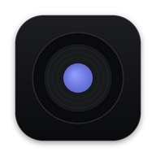

Musikbox
Music and videos from YouTube without ads, in its own window on your Windows laptop.
Windows 10 or 11
- 1Open "Musikbox Setup"
Click it in your browser's downloads, at the top right of the window.
The browser says it "isn't commonly downloaded"?
Edge: hover over the download, click … then Keep. If it asks again, click Show more and Keep anyway.
Chrome: click Keep (or Download suspicious file) next to the download.
It says this about every small app that isn't from a big company.
- 2Windows shows a blue box: click "More info", then "Run anyway"
Windows does this for apps it doesn't know yet. It's a one-time step.
- 3Click "Install"
It takes under a minute, then Musikbox opens by itself. Next time, start it from the icon on your desktop.
Open this link on your Windows laptop
Musikbox installs on Windows. Open this same WhatsApp message on your laptop (WhatsApp app or web.whatsapp.com) and click the link there.
This link is incomplete
Please open the full link from the message you received. If it still doesn't work, ask the person who sent it for a new one.
Private link, please don't forward it.